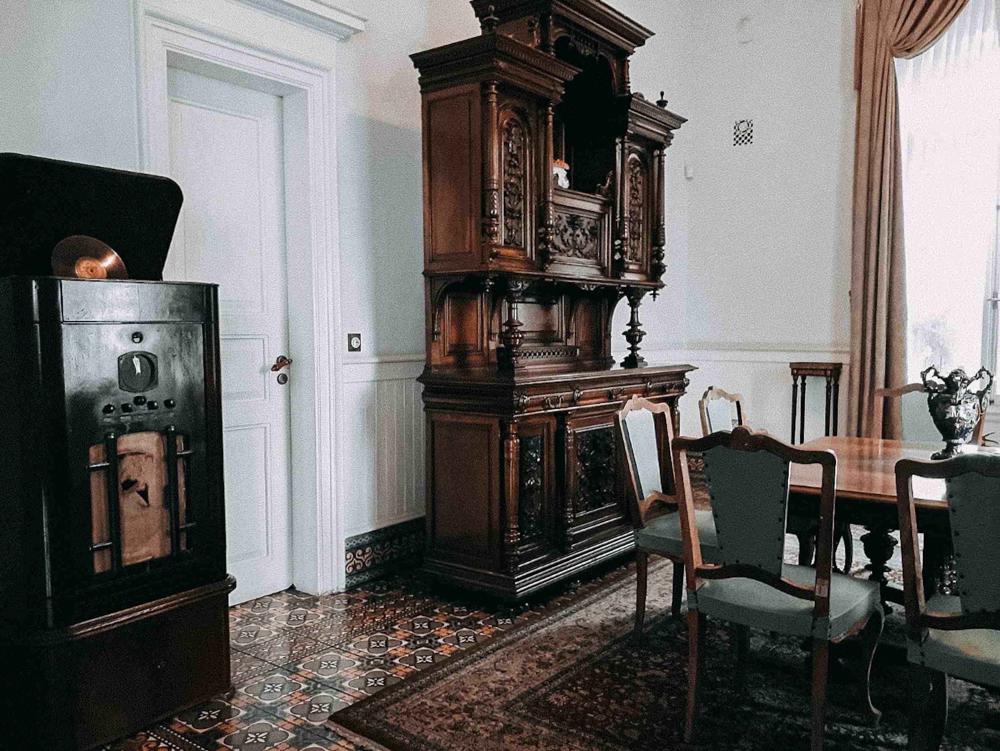
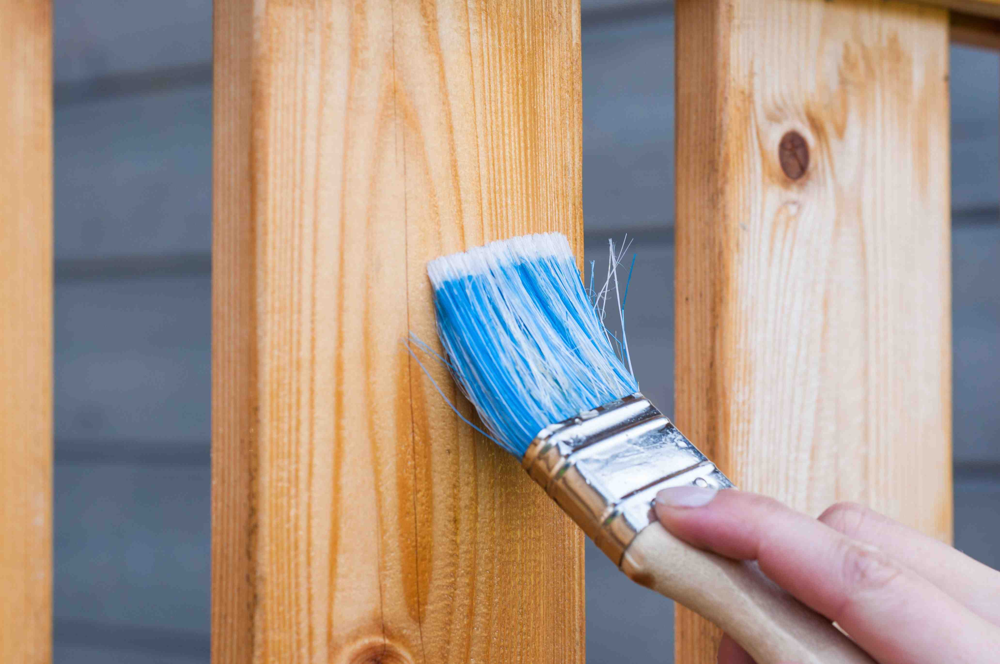
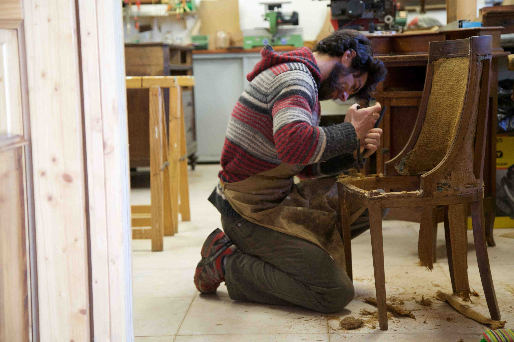
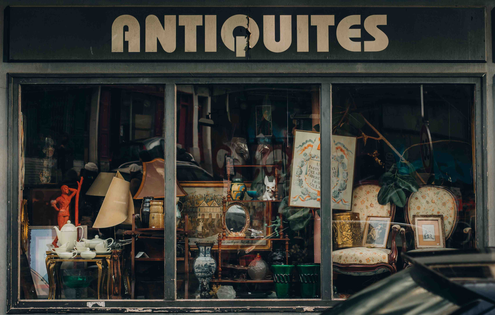
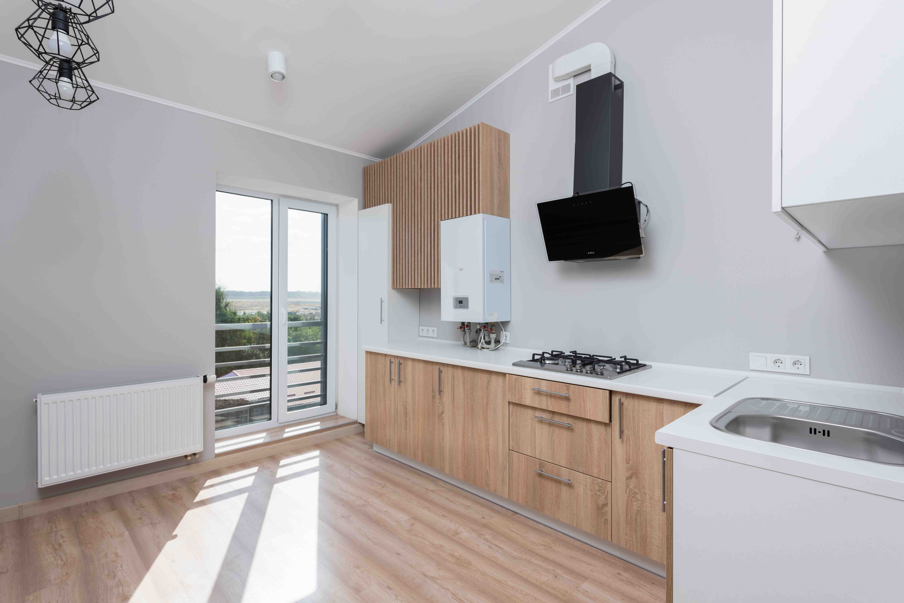
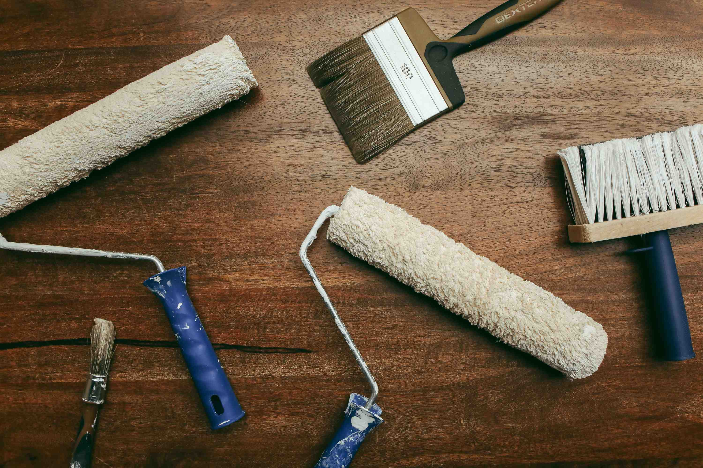
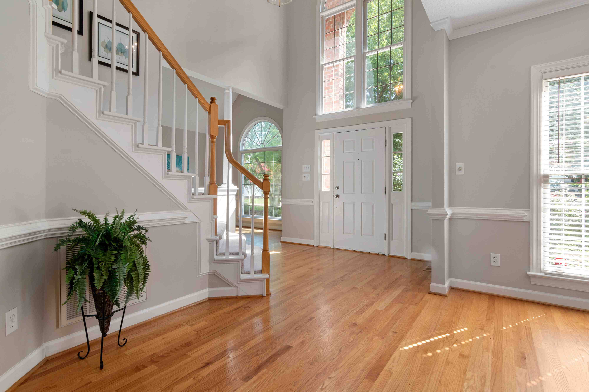
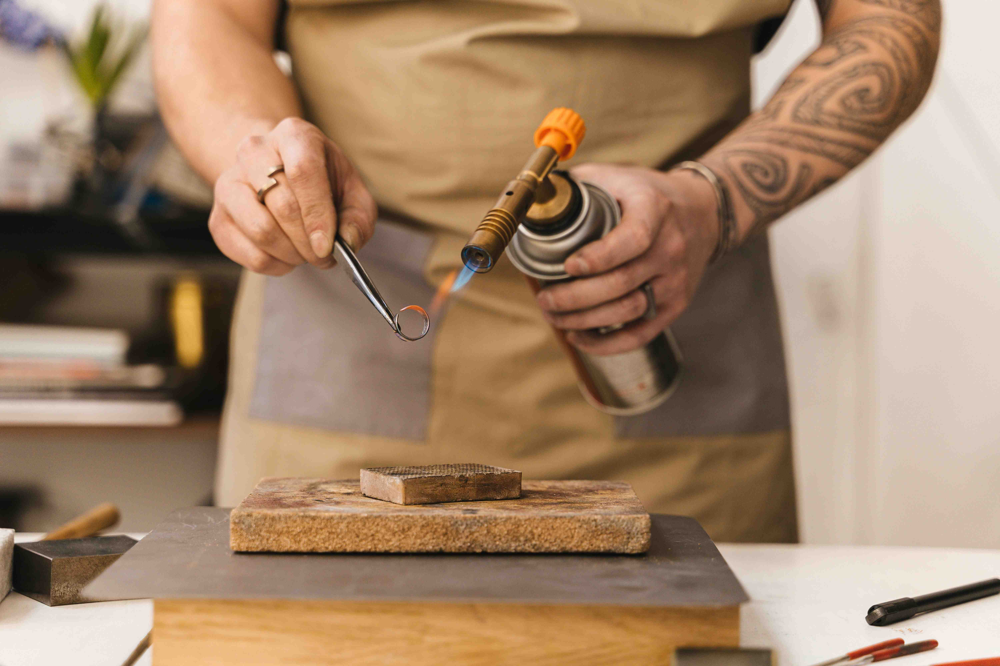
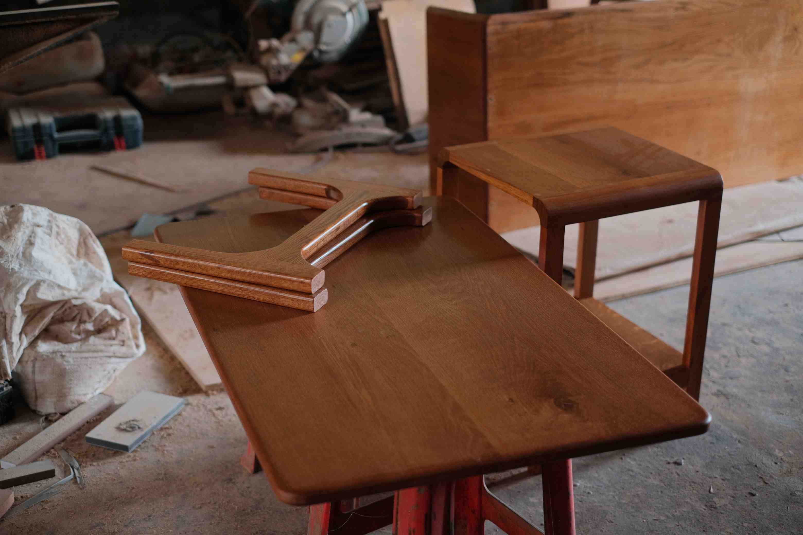
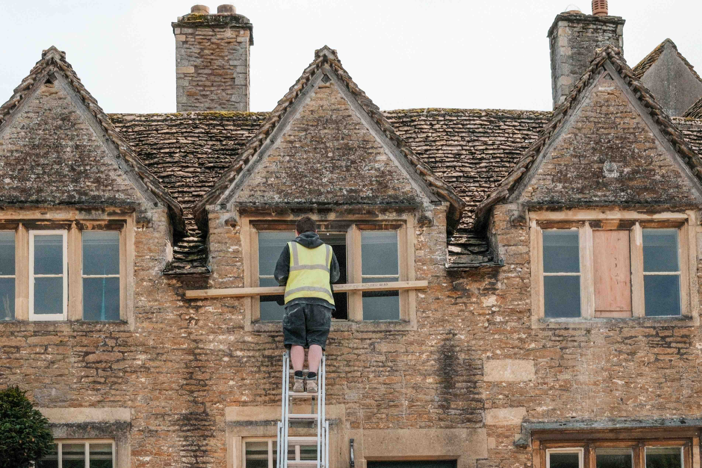

01
French Polishing
Hand-applied shellac for suitable wooden surfaces, with tone and sheen agreed after assessment.
Enhance the natural grain.
Learn more ↗Request a quote ↗OUR EXPERTISE
Specialist restoration and finishing, guided by the piece and how you use it.
EXPLORE OUR SERVICES
From a small mark to a complete furniture restoration, explore the options below. French polishing, varnishing and lacquer are distinct finishing methods.
Hand-applied shellac for suitable wooden surfaces, with tone and sheen agreed after assessment.
Enhance the natural grain.
Learn more ↗Request a quote ↗
Repairs and refinishing shaped around construction, condition and the original character.
Keep a valued piece in use.
Request a quote ↗
A suitable protective varnish selected for the wood, intended use and existing finish.
Protection chosen for the surface.
Request a quote ↗
Damage assessed for localized filling, blending or broader refinishing where required.
A considered repair strategy.
Request a quote ↗
A restrained approach that considers original finishes, patina and previous repairs.
Preserve character where suitable.
Request a quote ↗
Cabinet doors, drawers and surfaces prepared and finished with compatibility in mind.
Renew a coordinated appearance.
Request a quote ↗
Tone trials and careful blending to help new work sit alongside an existing surface.
Agree the colour before finishing.
Request a quote ↗
Assessment and on-site finishing of suitable architectural woodwork and fitted surfaces.
Care for the details of your space.
Request a quote ↗Preparation and refinishing tailored to surface wear, construction and everyday use.
A finish suited to the way you live.
Request a quote ↗
Finish damage examined to determine whether localized treatment or refinishing is appropriate.
Understand the mark before treatment.
Request a quote ↗
Bespoke tone and sheen choices for suitable new or restored wooden pieces.
A finish with a clear intention.
Request a quote ↗
Practical advice tailored to the applied finish, curing period and intended use.
Care that continues after restoration.
Request a quote ↗CHOOSING YOUR SERVICE
Provide photographs, dimensions and a description of the damage or wear.
Discuss the existing finish, suitable methods and the limits of repair.
Review the proposed preparation, treatment, finish and care requirements.
WHERE THE WORK HAPPENS
SERVICE QUESTIONS
No. Share what you know, but the existing surface should be assessed before treatment is proposed.
No. Suitability depends on the material, existing finish and use. Shellac is sensitive to water, heat and alcohol.
Not always. Damage depth and finish condition influence what can be achieved. Limitations should be discussed before agreeing work.
YOUR NEXT STEP